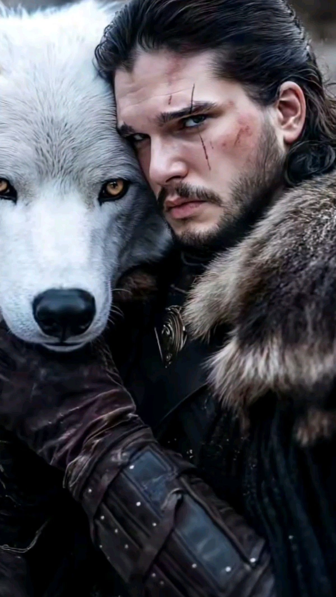

Personagens
"Game of Thrones" é uma série de televisão baseada na série de livros "As Crônicas de Gelo e Fogo", escrita por George R.R. Martin. A série é conhecida por sua narrativa complexa, personagens multifacetados e reviravoltas inesperadas. Situada em um mundo fictício, a história gira em torno das lutas pelo poder entre várias famílias nobres, enquanto uma ameaça sobrenatural cresce além da Muralha no norte.
Jon Snow
O bastardo de Winterfell, conhecido por sua honra e coragem.
Daenerys Targaryen
A Mãe dos Dragões, determinada a recuperar o trono de seus ancestrais.
Casas
Casa Stark
Senhores do Norte, conhecidos por sua honra e lealdade.
Casa Lannister
Ricos e poderosos, famosos por seu lema "Ouça-me rugir!"
Temporadas
A série é dividida em 8 temporadas, cada uma explorando diferentes arcos da história:
- Temporada 1 (2011)
- Temporada 2 (2012)
- Temporada 3 (2013)
- Temporada 4 (2014)
- Temporada 5 (2015)
- Temporada 6 (2016)
- Temporada 7 (2017)
- Temporada 8 (2019)